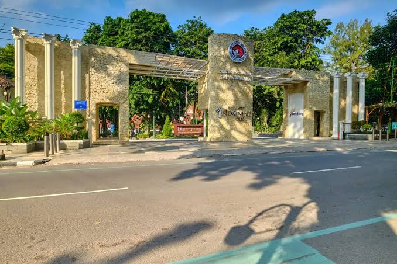
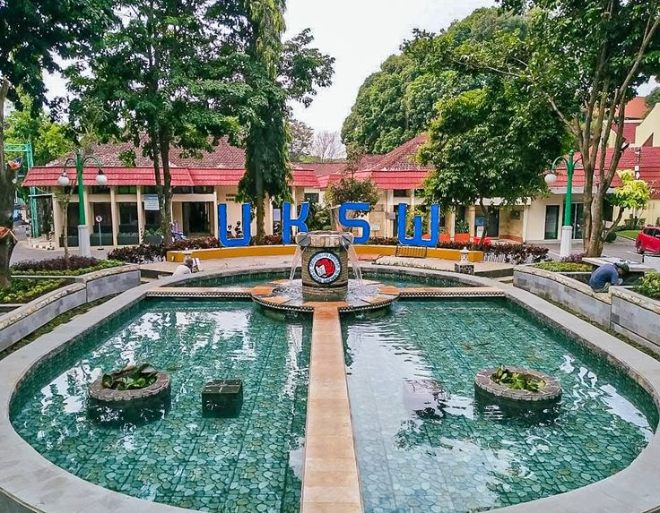
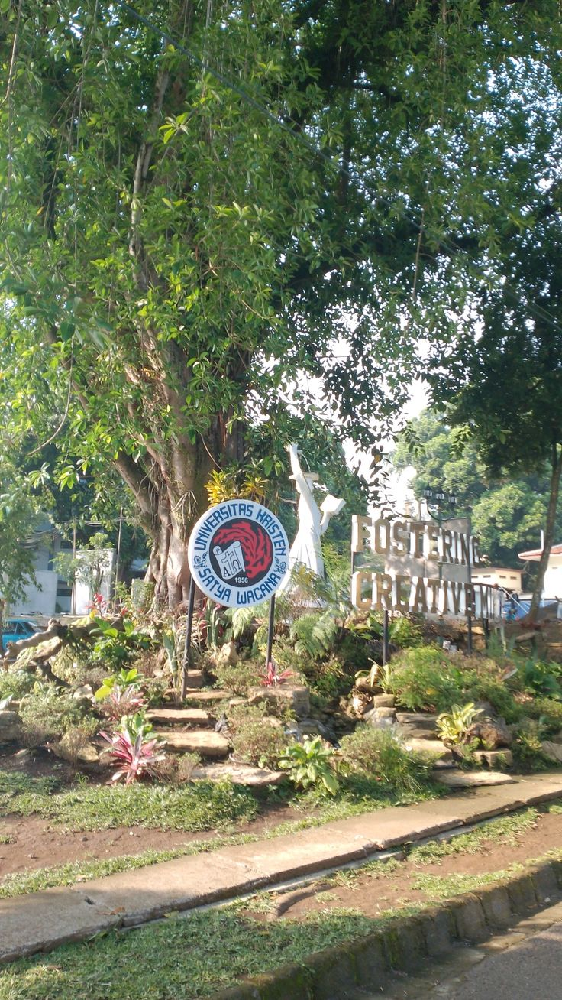

Web Development
Dari menyusun layout sampai menghubungkan frontend dengan backend. Saya nyaman bekerja dengan HTML, CSS, dan JavaScript, lalu memakai React, Node.js, atau Three.js saat proyeknya membutuhkan.
- HTML/CSS/JS
- React
- Node.js
- Three.js
Mahasiswa Teknik Informatika UKSW yang punya passion di web development. Saya bantu usaha kecil dan personal brand tampil lebih rapi lewat website yang cepat, responsif, dan enak dipakai.
Sedikit cerita soal kuliah, cara saya bekerja, dan hal-hal yang bikin saya betah di dunia web.
Saya Refah, mahasiswa aktif S1 Teknik Informatika di Universitas Kristen Satya Wacana (UKSW), Salatiga. Di kampus saya belajar pemrograman, sistem, dan cara berpikir terstruktur. Di luar kelas, saya lebih sering menghabiskan waktu mengutak-atik layout, animasi, dan hal-hal kecil yang bikin website terasa nyaman.
Bagi saya, website yang baik bukan cuma yang terlihat keren. Ia harus jelas saat dibaca, cepat saat dibuka, dan tetap enak dipakai di HP. Itu prinsip yang saya bawa setiap kali mengerjakan proyek.
Saat ini saya terbuka untuk membantu UMKM, mahasiswa, atau personal brand yang butuh website. Kalau kamu baru punya ide kasar, kita bisa mulai dari obrolan santai.
Universitas Kristen Satya Wacana (UKSW)
Mahasiswa aktif · Salatiga


Bukan daftar panjang tanpa arah. Ini tools dan fondasi yang benar-benar saya gunakan untuk membangun web.
Dari menyusun layout sampai menghubungkan frontend dengan backend. Saya nyaman bekerja dengan HTML, CSS, dan JavaScript, lalu memakai React, Node.js, atau Three.js saat proyeknya membutuhkan.
Belajar C membuat saya lebih teliti soal logika, memori, dan struktur program. Fondasi ini membantu saya menulis kode web yang lebih rapi dan mudah dirawat.
Mulai dari satu halaman sederhana sampai proyek custom. Semua dikerjakan dengan struktur rapi dan komunikasi yang jelas.
Satu halaman yang fokus: kenalkan produk atau jasa, bangun kepercayaan, lalu arahkan calon pelanggan ke WhatsApp. Cocok untuk usaha yang baru mulai online.
Tempat untuk menunjukkan karya, pengalaman, dan keahlian tanpa terlihat seperti CV biasa. Desainnya dibuat personal, rapi, dan mudah diperbarui.
Butuh fitur yang belum ada di template? Kita rancang bersama—mulai dari dashboard, form, integrasi API, sampai halaman multi-bahasa.
Timeline jelas, progres bisa ditanyakan kapan saja.
Struktur file rapi dan mudah dikembangkan.
Nyaman dibuka dari HP, tablet, sampai desktop.
Bisa disesuaikan dengan kebutuhan dan budget.
Belum ada harga pasti di sini karena setiap proyek berbeda. Ceritakan kebutuhanmu, nanti saya kirim penawaran yang masuk akal.
Untuk yang butuh kehadiran online sederhana dan langsung bisa dipakai.
Pilihan pas untuk bisnis atau personal brand yang ingin terlihat lebih matang.
Untuk proyek yang punya alur, fitur, atau integrasi khusus.
Belum yakin pilih yang mana? Tanya saja lewat WhatsApp. Tidak ada paksaan untuk langsung deal.
Tidak perlu sudah punya brief lengkap. Kadang obrolan singkat soal tujuan dan referensi sudah cukup untuk mulai. Saya balas langsung, kok.
Chat via WhatsAppBiasanya dibalas dalam 1x24 jam. Tanpa paksaan untuk langsung deal.